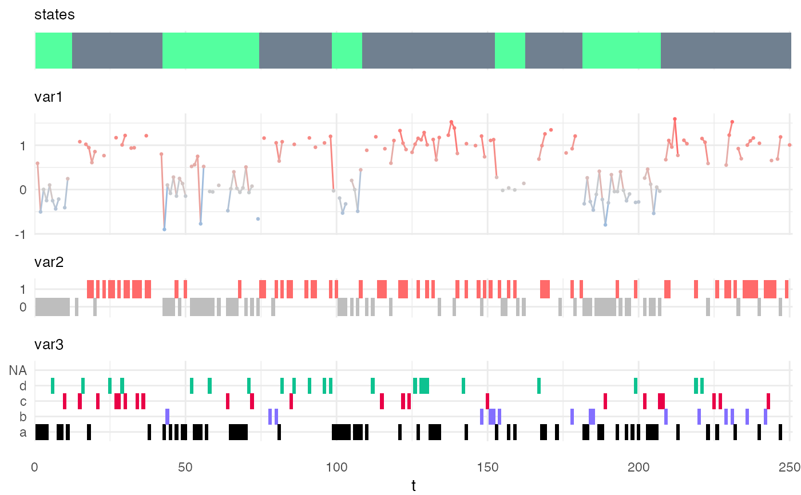

simulate_hsmm.RdThis function returns a data.frame with a simulated state sequence and observations.
The length of the simulated sequence can be specified either as a number of state transition (with argument n_state_transitions) or as a number of time-point (with argument n_timepoints)
Each row of the returned data.frame is a time-point and the columns specify the sequence id, the time-point, the state and the values of the observation. Each variable has its own column.
simulate_hsmm( model, seq_id = NULL, n_state_transitions = NULL, n_timepoints = NULL, seed = NULL, all_states = FALSE, min_tp_per_state = NULL, mult_seq_allowed = TRUE )
| model | a object of class or |
|---|---|
| seq_id | (optional) a |
| n_state_transitions | (optional) an |
| n_timepoints | (optional) an |
| seed | (optional) the seed for the random generator. Allows to reproduce a simulated sequence. |
| all_states | (optional) a |
| min_tp_per_state | (optional) if |
| mult_seq_allowed | (optional) if |
A data.frame with the following columns: seq_id, the identifier of the sequence, t the time-stamp, state the hidden state and one additional column for each specified variable.
J. O’Connell, S. Hojsgaard, Hidden semi-Markov models for multiple observation sequences: The mhsmm package for R. Journal of Statistical Software. 39, 1–22 (2011) https://www.jstatsoft.org/article/view/v039i04
my_model = simple_model # simple_model is a model attached to the HiddenSemiMarkov package for demos Xsim = simulate_hsmm(model = my_model, n_state_transitions = 10) plot_hsmm_seq(model = my_model, X = Xsim)